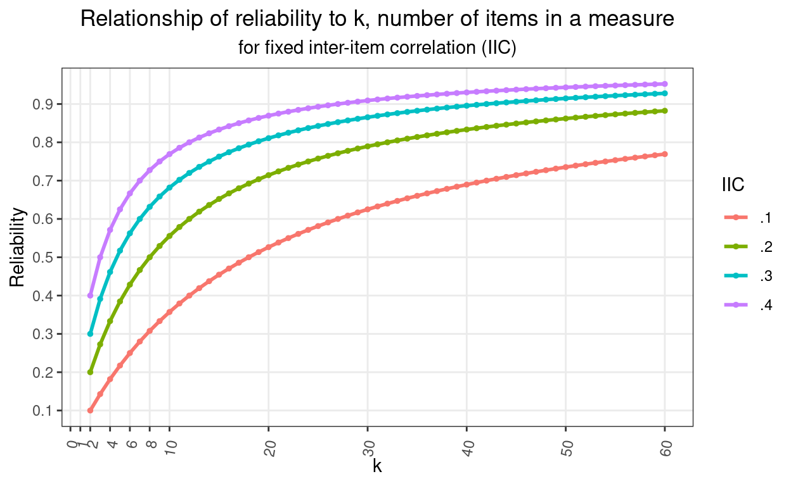
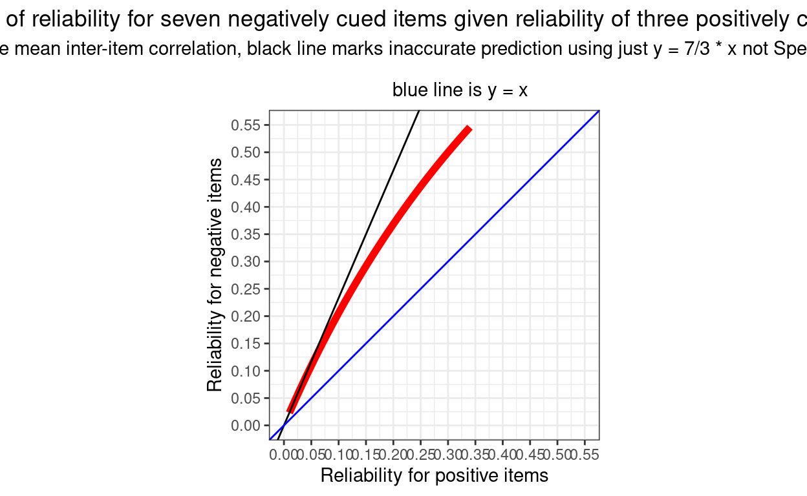

Show code
### this is just the code that creates the "copy to clipboard" function in the code blocks
htmltools::tagList(
xaringanExtra::use_clipboard(
button_text = "<i class=\"fa fa-clone fa-2x\" style=\"color: #301e64\"></i>",
success_text = "<i class=\"fa fa-check fa-2x\" style=\"color: #90BE6D\"></i>",
error_text = "<i class=\"fa fa-times fa-2x\" style=\"color: #F94144\"></i>"
),
rmarkdown::html_dependency_font_awesome()
)The Spearman-Brown formula: \[{\rho^{*}}=\frac{n\rho}{1 + (n-1)\rho}\]
gives us this plot.
Show code
library(CECPfuns) # for getRelBySpearmanBrown()
### to get the CECPfuns package use:
# remotes::install_github("cpsyctc/CECPfuns", build_vignettes = TRUE, build_manual = TRUE)
### for which you may have needed to do
# install.packages("remotes")
### in order to get the remotes package
### you can also use install_github(), essentially the same as in remotes
### from the devtools package if you have installed that but if you aren't
### making R packages then you probably don't want all of devtools
### see https://www.psyctc.org/Rblog/posts/2021-02-10-making-my-first-usable-package/
maxK <- 60
vecK <- 2:maxK
vecK %>%
as_tibble() %>%
rename(k = value) %>%
rowwise() %>%
### I have put the explict mapping of getRelBySpearmanBrown to my CECPfuns package here to avoid confusion
mutate(rel.1 = CECPfuns::getRelBySpearmanBrown(oldRel = .1, lengthRatio = k / 2, verbose = FALSE),
rel.2 = CECPfuns::getRelBySpearmanBrown(oldRel = .2, lengthRatio = k / 2, verbose = FALSE),
rel.3 = CECPfuns::getRelBySpearmanBrown(oldRel = .3, lengthRatio = k / 2, verbose = FALSE),
rel.4 = CECPfuns::getRelBySpearmanBrown(oldRel = .4, lengthRatio = k / 2, verbose = FALSE)) %>%
ungroup() -> tibDat
tibDat %>%
pivot_longer(cols = starts_with("rel."), names_to = "IIC", values_to = "Reliability") %>%
mutate(IIC = factor(str_sub(IIC, 4, 5))) -> tibDatLong
ggplot(data = tibDatLong,
aes(x = k, y = Reliability, group = IIC, colour = IIC)) +
geom_point(size = 1) +
geom_line(size = 1) +
scale_x_continuous(breaks = c(1, seq(2, 8, 2), seq(0, maxK, 10))) + # and I want the x axis with these tick marks and labels
scale_y_continuous(breaks = seq(0, 1, .1)) + # same for the y axis
ggtitle("Relationship of reliability to k, number of items in a measure",
subtitle = "for fixed inter-item correlation (IIC)") +
theme_bw() + # I like this simple theme with white plot area
theme(plot.title = element_text(hjust = .5),
plot.subtitle = element_text(hjust = .5), # I like titles and subtitles centered
panel.grid.minor = element_blank(), # gets grid lines only where the axis tick marks are not adding minor ones between those
axis.text.x = element_text(angle = 80, # trying to get the axis point labels rotated for maximum clarity
hjust = 1, # and aligning them,
vjust = .75)) # is there a bug in the ggplot code failing to handle the number of characters?
Background
I must have discovered this neat little formula back in the very early 1990s thinking about the Body Shape Questionnaire (BSQ; Cooper et al. (1986)). That thinking led to a paper I still like quite a bit: Evans & Dolan -Evans and Dolan (1993). In the formula \(\rho\) is the reliability of a test and the equation is predicting \(\rho^{*}\) the reliability of a new test longer, or shorter, than the first by a ratio \(n\).
In fact, the title of this page could have been the more accurate: “How does internal reliability/consistency relate to number of items in Classical Test Theory (CTT) assuming that mean inter-item correlation remains the same?” That’s what the Spearman-Brown (prediction) formula tells us.
There’s a typically excellent wikipedia entry about the formula. As well as a very thorough explanation of the formula the page also has a fascinating bit of history about the factor that Spearman-Brown was neither a single person with a double barrelled surname, nor a working partnership. I do love the way wikipedia contributors often add these things.
Why am I posting about this now, thirty years later? Well, it came in useful recently looking at the psychometrics of the YP-CORE. The YP-CORE has ten items, seven negatively cued, e.g. “My problems have felt too much for me” and three that are positively cued, e.g. “I’ve felt able to cope when things go wrong”. Emily wanted to test whether the reliability of the positively cued items was the same as that of the negatively cued items and had discovered the excellent cocron package (see also http://comparingcronbachalphas.org). The cocron package implements in R formulae for inference testing one Cronbach alpha value, and for testing equality of more than one alpha (both for values from the same sample, i.e. a within participants test, as would have been the case for Emily’s question, and for the probably more common question where values from multiple groups are to be compared, e.g. is the alpha higher when women complete the measure than it is when men complete it. These are based on the parametric model of and developed by Feldt and summarised nicely in Feldt, Woodruff, and Salih (1987).
That looked to give the test Emily wanted, however, the truism that unless something is very wrong, a measure of a latent variable with more items will always have higher reliability than one with fewer. I avoid gambling like the plague but I should have offered a bet to Emily that the negative items would have the higher reliability, and given that she had an aggregated dataset with n in the thousands, that the difference would be highly statistically significant.
Theory behind the Spearman-Brown formula
Why should a longer test have higher reliability? Simply because as you get more items each item’s error (unreliability) variance, by definition uncorrelated with any other item’s error variance will tend to cancel out while any systematic variance that each item captures from the latent variable will accumulate. (Why do I say that items’ error variances are uncorrelated with each other: that simply follows from the definition that unreliability is random contamination of scores: if errors were correlated they would be part of invalidity: systematic contamination of scores, not of unreliability.)
So it’s logical that longer tests will have higher reliability than shorter assuming the same or similar mean inter-item correlations which reflect the systematic variance across scores is similar or the same.
The Spearman-Brown formula tells us how reliability changes with k, the number of items. How does the relationship look? That was the plot above. Here it is again.
Show code
maxK <- 60
vecK <- 2:maxK
vecK %>%
as_tibble() %>%
rename(k = value) %>%
rowwise() %>%
mutate(rel.1 = getRelBySpearmanBrown(oldRel = .1, lengthRatio = k / 2, verbose = FALSE),
rel.2 = getRelBySpearmanBrown(oldRel = .2, lengthRatio = k / 2, verbose = FALSE),
rel.3 = getRelBySpearmanBrown(oldRel = .3, lengthRatio = k / 2, verbose = FALSE),
rel.4 = getRelBySpearmanBrown(oldRel = .4, lengthRatio = k / 2, verbose = FALSE)) %>%
ungroup() -> tibDat
tibDat %>%
pivot_longer(cols = starts_with("rel."), names_to = "IIC", values_to = "Reliability") %>%
mutate(IIC = factor(str_sub(IIC, 4, 5))) -> tibDatLong
ggplot(data = tibDatLong,
aes(x = k, y = Reliability, group = IIC, colour = IIC)) +
geom_point(size = 1) +
geom_line(size = 1) +
scale_x_continuous(breaks = c(1, seq(2, 8, 2), seq(0, maxK, 10))) + # and I want the x axis with these tick marks and labels
scale_y_continuous(breaks = seq(0, 1, .1)) + # same for the y axis
ggtitle("Relationship of reliability to k, number of items in a measure",
subtitle = "for fixed inter-item correlation (IIC)") +
theme_bw() + # I like this simple theme with white plot area
theme(plot.title = element_text(hjust = .5),
plot.subtitle = element_text(hjust = .5), # I like titles and subtitles centered
panel.grid.minor = element_blank(), # gets grid lines only where the axis tick marks are not adding minor ones between those
axis.text.x = element_text(angle = 80, # trying to get the axis point labels rotated for maximum clarity
hjust = 1, # and aligning them,
vjust = .75)) # is there a bug in the ggplot code failing to handle the number of characters?That shows clearly how reliability climbs very rapidly as you move from having two items (the minimum to have an internal reliability) through single figures and then how the improvement steadily slows and will never reach 1.0 (unless you start with a reliability of 1.0 which isn’t our real world and arguably isn’t any real world). It also shows that the curve depends on the inter-item correlation (IIC). I have plotted starting with a correlation between two items of 0.1, 0.2, 0.3 or 0.4.
So knowing that there are seven negatively cued items in the YP-CORE and three positively cued items, how would the ratio of the reliabilities of the two vary with the mean ICC assuming that it was the same in each set of items? Here, in red, is the plot of the Spearman-Brown predicted reliability for the negatively cued items given a range of reliabilty for the three positively cued items from .01 to .35.
Show code
nNeg <- 7
nPos <- 3
vecRelPos <- seq(.01, .35, .01)
vecRelPos %>%
as_tibble() %>%
rename(relPos = value) %>%
rowwise() %>%
mutate(relNeg = getRelBySpearmanBrown(oldRel = relPos, lengthRatio = 7/3, verbose = FALSE),
relRatio = relPos / relNeg) %>%
ungroup() -> tibDat2
ggplot(data = tibDat2,
aes(x = relPos, y = relNeg)) +
geom_line(colour = "red",
size = 2) +
geom_abline(intercept = 0, slope = 7 / 3) +
geom_abline(intercept = 0, slope = 1,
colour = "blue") +
scale_x_continuous(breaks = seq(0, .55, .05),
limits = c(0, .55)) +
scale_y_continuous(breaks = seq(0, .55, .05),
limits = c(0, .55)) +
ylab("Reliability for negative items") +
xlab("Reliability for positive items") +
ggtitle("Plot of reliability for seven negatively cued items given reliability of three positively cued items",
subtitle = "Assumes same mean inter-item correlation, black line marks inaccurate prediction using just y = 7/3 * x not Spearman-Brown formula\n
blue line is y = x") +
theme_bw() +
theme(plot.title = element_text(hjust = .5),
plot.subtitle = element_text(hjust = .5),
aspect.ratio = 1)
We can see that the values are always well above equality to the reliability of the three items (the blue line) and we can see that the relationship isn’t a simple proportion and that the values are always lower than 7/3 times the reliability from the positively cued items.
Related resouces
Function getRelBySpearmanBrown() in the CECPfuns package
As announced here, I am developing CECPfuns package (https://cecpfuns.psyctc.org/) which contains the function getRelBySpearmanBrown() and which was used in the code above. There is also the function SpearmanBrown() in the psychometric package by Thomas D. Fletcher which does the same thing (and gives the same results!)
Entry in the OMbook glossary
I have been creating an online glossary that started around the OMbook (Evans, C., & Carlyle, J. (2021). Outcome measures and evaluation in counselling and psychotherapy (1st ed.). SAGE Publishing. https://ombook.psyctc.org/book/). I’ve put an entry that gives succinct introduction to the Spearman-Brown formula in that: here.
Online shiny app to get Spearman-Brown predictions
Perhaps most usefully, I have now created an app in my growing collection of shiny apps that allows you to put in any reliability and number of items and it gives you a plot of formula predictions for any range of other numbers of items (with a downloadable plot and dataset of those reliabilities). That’s here.
website view counter